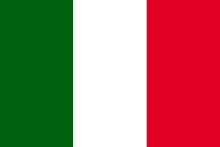
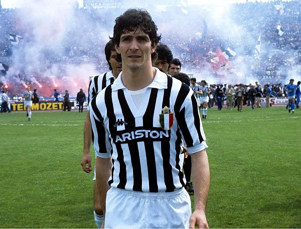
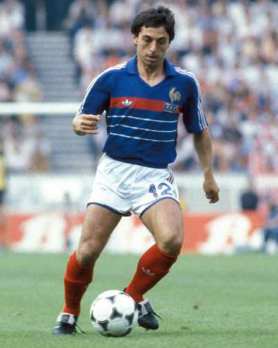
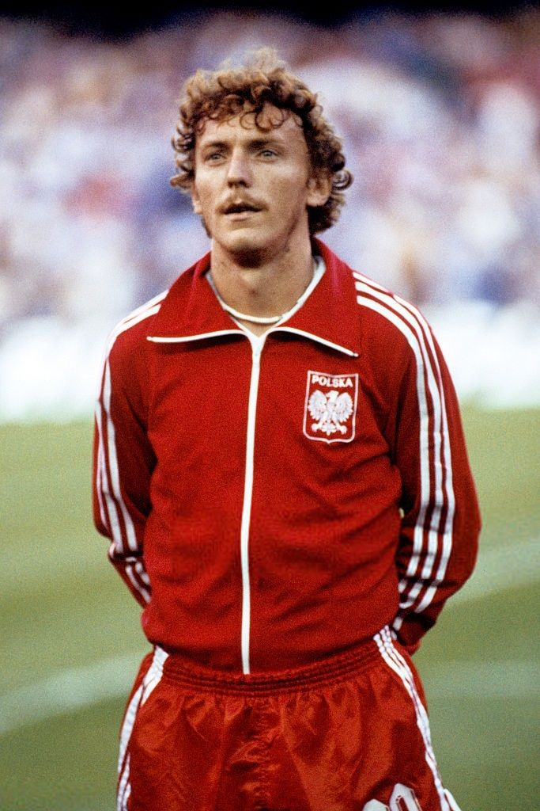

 Paolo ROSSI - 1982
- Un Ballon d'Or miracle du mois de juillet
Un joueur vraiment unique en son genre, dans une spécialité où les phénomènes ne courent pas les rues.
Nationalité : Italienne
Né le : 23 septembre 1956, à Prato (ITA)
Taille : 1,74
Poids : 66 kg
Poste : attaquant
Clubs : Cattolica Virtus (1968-1971), Juventus Turin (1971-1975), Côme (1975-1976), Vicenza (1976-1979), Pérouse (1979-1980), Juventus Turin (1981-1985), Milan AC (1985-1986) et Vérone (1986-1987)
Palmarès de joueur : Coupe du monde 1982 ; Supercoupe d'Europe 1984 ; Coupe des champions 1985 ; Coupe des Coupes 1984 ; Championnat d'Italie 1982 et 1984 ; Coupe d'Italie 1983 ; meilleur buteur du Mondial 1982 (6 buts) ; meilleur buteur du Championnat d'Italie 1978 (24)
Bilan en équipe nationale : 48 sélections A, 20 buts (1977-1986)
Bilan en phase finale de Coupe du monde : 2 participations (1er en 1982), 14 matches, 9 buts (1978-1982)
Palmarès Ballon d'Or : vainqueur en 1982
Classement du Ballon d’Or France Football 1982 :

Paolo Rossi (Italie / Juventus Turin),
115 pts.

Alain Giresse (France / Bordeaux),
64 pts.

Zbigniew Boniek (Pologne / Juventus Turin),
51 pts.
Retour à l'accueil